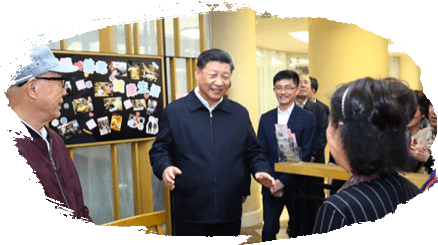
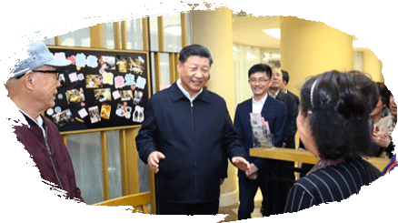
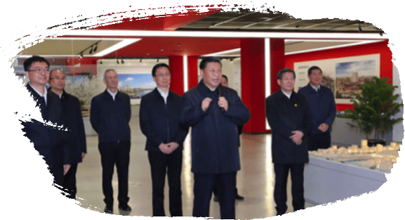
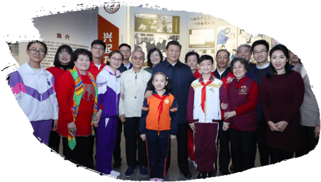
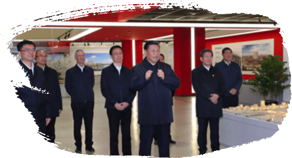
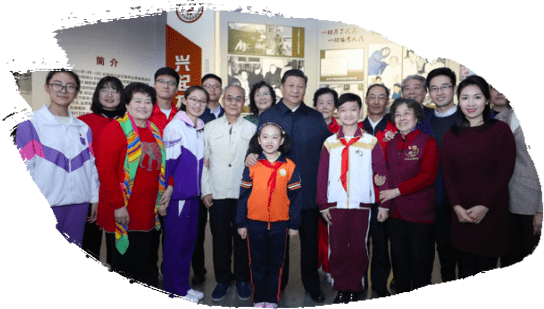

河南考察
金秋时节，中原大地洋溢着丰收的喜悦，到处生机盎然。
9月16日至18日，习近平在河南先后来到信阳、郑州等地，深入革命老区、农村、企业等，就经济社会发展和“不忘初心、牢记使命”主题教育情况进行考察调研。
9月16日
同民宿店店主一家亲切交谈
下午，习近平乘车来到新县田铺乡田铺大塆考察调研。在“老家寒舍”民宿店，习近平仔细察看服务设施，同店主韩光莹一家围坐在一起交谈。韩光莹告诉总书记，他是红军后代、革命烈士家属，近年来靠乡村旅游实现了增收，还带动乡亲们发展民宿走上致富路。
9月17日
实地察看油茶树种植和挂果情况
上午，习近平来到光山县槐店乡司马光油茶园考察调研。在油茶园展厅，习近平仔细了解光山县发展油茶产业、推动脱贫整体情况。天空飘着毛毛细雨，油茶园绿意更浓。习近平同正在劳作的村民和管理人员交流，实地察看油茶树种植和挂果情况，询问乡亲们家庭、务工和收入情况。大家告诉总书记，近年来，通过发展油茶种植加工产业，贫困户摆脱了贫困，村民过上了好日子。
2019习近平地方考察的温情瞬间
2019年，习近平7次赴地方考察。走基层、进山林、访社区，在雄安，他向铁路建设者致以亲切的问候；在天津，他为社区志愿者们点赞；在重庆，他看望贫困户；在江西，他与苏区的父老乡亲拉家常；在内蒙古，他和护林员亲切交谈；在甘肃，他同莫高窟游客握手问好；在上海，他关切老人用餐；在澳门，他同市民和师生亲切交流。
这一个个温情瞬间，彰显的是大国领袖“我将无我，不负人民”的为民情怀。
京津冀
重庆
江西
内蒙古
甘肃
河南
上海
 
上海考察
11月2日至3日，习近平在中共中央政治局委员、上海市委书记李强和市长应勇陪同下，深入上海杨浦滨江、古北社区，就贯彻落实党的十九届四中全会精神、城市公共空间规划建设、社区治理和服务等进行调研，同基层干部群众亲切交流。
11月2日
同群众亲切交谈
下午，习近平来到杨浦滨江公共空间杨树浦水厂滨江段，他沿滨江栈桥步行察看黄浦江两岸风貌，在参观途中，遇到许多正在休闲健身的市民，习近平同他们亲切交谈。
11月2日
关切老年人用餐
傍晚，习近平来到长宁区虹桥街道古北市民中心实地考察。他逐一察看涉外人员服务窗口、老年助餐点等，了解社区生活、文化、养老等便民服务情况。在老年助餐点，习近平同正在用餐的居民热情交谈，询问饭菜可不可口、价格贵不贵、对社区便民服务还有什么新要求。
澳门
12月19日上午，国家主席习近平位于澳门黑沙环的政府综合服务中心和濠江中学附属英才学校，同澳门市民和师生亲切交流。
12月19日
给学生上了一堂爱国主义教育课
在濠江中学附属英才学校观摩以“‘一国两制’与澳门”为题的中国历史公开课后，习近平走到学生中间即席发表重要讲话。他指出，爱国主义教育兹事体大，希望特别行政区政府教育部门和学校担负起主体责任，在已有基础上再接再厉，把爱国主义教育工作做得更好。相信澳门青年人必将成为有为的一代、值得骄傲的一代，成长为澳门和国家的栋梁之才。
甘肃考察
初秋的河西走廊，金风送爽，瓜果飘香，祁连雪山和沙漠绿洲相映成辉。
8月19日至22日，习近平在甘肃深入文物保护单位、农村、学校、草场林场、革命纪念馆、防洪工程、文化企业等，就经济社会发展和“不忘初心、牢记使命”主题教育情况进行考察调研。
8月19日
同莫高窟游客握手问好
上午，习近平从北京乘机抵达酒泉市所辖敦煌市，即前往莫高窟考察了解莫高窟历史沿革和文物保护研究情况，并走进洞窟察看历史悠久的彩塑、壁画。正在参观的游客看到总书记来了，激动地围拢上来，高声欢呼“总书记好！”“习主席好！”习近平向大家亲切招手致意，并不时走上前同大家握手问好，叮嘱大家在游览时注意爱护文物。
8月21日
实地了解“草方格压沙”作业
上午，习近平乘车前往古浪县八步沙林场。察看林场整体风貌，听取武威市防沙治沙整体情况汇报和八步沙林场“六老汉”三代人治沙造林的感人事迹。几位林场职工正在进行“草方格压沙”作业，习近平走过去，向他们询问作业方法，并拿起一把开沟犁，同他们一起干起来。
内蒙古考察
盛夏时节的内蒙古，蓝天白云，水草丰茂。
7月15日至16日，习近平深入社区、林场、农村、高校、机关单位，看望慰问各族干部群众，就经济社会发展、生态文明建设进行考察调研，实地指导开展“不忘初心、牢记使命”主题教育。
7月15日
深入林场同护林员交流
15日下午，习近平来到赤峰市喀喇沁旗马鞍山林场，听取当地生态文明建设和马鞍山林场造林护林工作情况汇报。顶着烈日，沿着崎岖的护林小道，习近平走进林区，察看林木长势，同正在劳作的护林员们交流，了解他们的工作、生活、家庭情况。
7月15日
到马鞍山村实地了解乡亲们的生产生活情况
下午，习近平走进四世同堂的“多民族之家”村民张国利家。张国利的母亲今年86岁，精神矍铄。总书记拉着她的手，亲切向她问好。习近平察看了院落、客厅、卧室、厨房、厕所等情况。习近平指出，乡村振兴了，环境变好了，乡村生活也越来越好了。要继续完善农村公共基础设施，改善农村人居环境，重点做好垃圾污水治理、厕所革命、村容村貌提升，把乡村建设得更加美丽。
初夏时节，赣江两岸郁郁葱葱，欣欣向荣。
5月20日，习近平深入赣州市的企业、农村、革命纪念馆，就经济社会发展进行考察调研，实地了解革命老区脱贫攻坚和推动中部地区崛起工作进展情况。
20日，习近平转乘火车来到于都县，在中央红军长征出发纪念馆在纪念馆一楼，习近平会见了于都县的红军后代、革命烈士家属代表。习近平动情地说，现在国家发展了，人民生活改善了，我们要饮水思源，不能忘记革命先辈、革命先烈，不能忘记革命老区的父老乡亲。
习近平来到梓山镇潭头村，察看村容村貌。习近平同孙观发一家和当地镇、村干部围坐在一起拉家常，关切询问他家收入怎么样、儿子儿媳在哪里就业、孩子在哪里上学、孩子在学校吃得好不好，家里还有什么困难和愿望。
江西考察
5月20日
会见了红军后代、革命烈士家属代表
5月20日
与苏区的父老乡亲拉家常
习近平来到贫困户谭登周家，从屋外看到屋内，详细询问老两口生活和身体状况。习近平指出，脱贫攻坚明年就要收官，要把工作往深里做、往实里做，重点做好那些尚未脱贫或因病因伤返贫群众的工作，加快完善低保、医保、医疗救助等相关扶持和保障措施，用制度体系保障贫困群众真脱贫、稳脱贫。
习近平来到中益乡小学。学校操场上，小学生们正在开展课外文体活动。看到总书记来了，学生们围拢过来，纷纷问习爷爷好，总书记高兴地同大家交谈，询问他们学习和生活情况。习近平嘱咐学校和老师既要当好老师，又要当好临时家长，把学生教好、管好。要把安全放在第一位，确保学生在学校学、住、吃都安全，让家长们放心。
山城四月，春风和煦，山水透绿，一派生机勃勃。
4月15日，习近平深入石柱土家族自治县的学校、农村，实地了解脱贫攻坚工作情况。
重庆考察
4月15日
4月15日
看望贫困户谭登周一家
 
 隆冬时节的华北大地，寒气袭人，滴水成冰。
1月16日至18日，习近平深入河北雄安新区、天津、北京，实地了解京津冀协同发展情况。
习近平来到河北雄安新区考察调研，在河北雄安新区规划展示中心，通过大屏幕连线京雄城际铁路雄安站建设工地现场。现场施工人员热烈鼓掌，向总书记问好。
习近平说：“现在是数九寒冬、天寒地冻，但我们的铁路建设者仍然辛勤劳动着。在此，我代表党中央，向你们并通过你们向全国所有的铁路建设者、劳动者们致以亲切的问候和良好的祝愿！”
上午，在社区志愿服务展馆，习近平同志愿者们亲切交流。习近平为社区志愿者们点赞，称赞他们是为社会作出贡献的前行者、引领者。习近平强调，志愿服务是社会文明进步的重要标志，是广大志愿者奉献爱心的重要渠道。要为志愿服务搭建更多平台，更好发挥志愿服务在社会治理中的积极作用。
京津冀考察
1月16日
向铁路建设者致以亲切的问候
1月17日
为社区志愿者们点赞